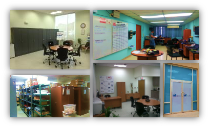

HI-TEK MARINE delivers reliable service and support for maritime electronic systems. Our company specializes Automation, Communications, Navigation and Environmental Protection equipment, for marine and land projects.
We boast an important inventory, with a full set of spares and complete systems, readily available for repairs and installations. No matter how small or large your vessel is, HI-TEK MARINE can assist with you with services and inspections, 24 hours a day, 7 days a week.
Just drop us an email (service@hitekmarine.com) or give us a call (+507 261-6177).

Hi-Tek Marine S.A. is a Panamanian company founded in 1991, dedicated to the service and marketing of marine electronic equipment, for vessels operating in the Panama Canal, Caribbean, Central and South American regions.
Incorporating electrical and industrial engineers with over 25 years of experience working in the field, Hi-Tek Marine is well known for providing its customers reliable and quality services, 24 hours a day, 365 days a year.
Our offices include facilities for administrative functions and job coordination, a secure and controlled warehouse space for storage of spare parts and complete systems, as well as an area dedicated for in-house trainings and testing of new equipment.